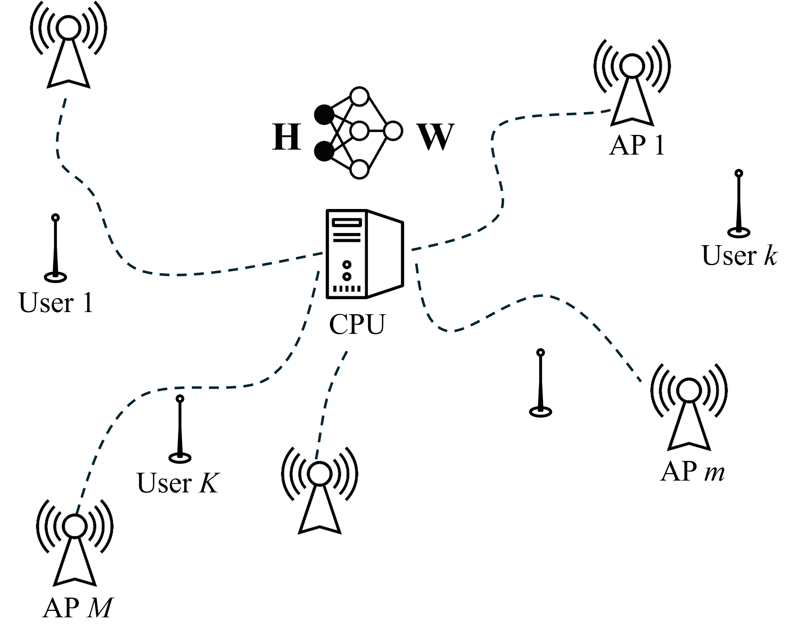
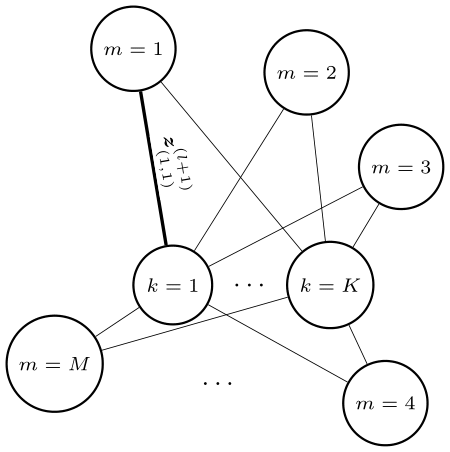
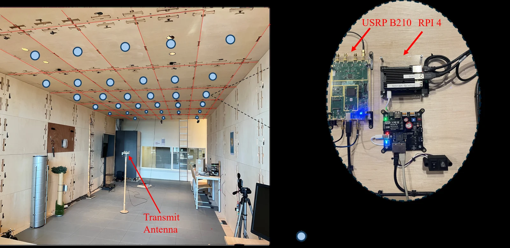
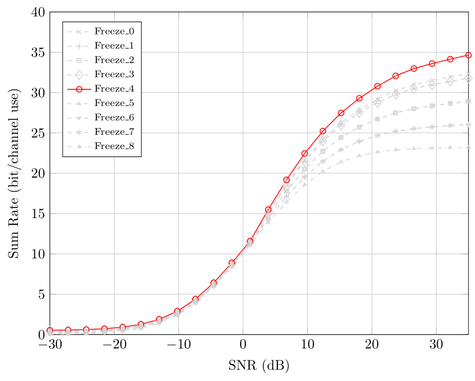

← AI-driven signal processing in distributed MIMO
GNN-based Precoder Design and Fine-tuning for Cell-free Massive MIMO with Real-world CSI
Cell-free massive MIMO aims to provide uniform, high-quality wireless service through distributed access points. This work trains a graph neural network precoder on synthetic channel state information (CSI), then fine-tunes it with real measurements from the Techtile testbed.
Key Results
- Real channel measurements were collected at 500 spatial positions on the Techtile testbed, which has 33 ceiling-mounted access points; the positions produce diverse user combinations.
- Fine-tuning improves the real-world sum rate by 8.2 bits/channel use (approximately 15.7%).
- Freezing four layers yields the best performance among the layer-freezing strategies evaluated.
- The fine-tuned model generalizes better than conjugate beamforming (CB) and performs close to zero-forcing (ZF) in practice.
Download the dataset (original measurements from the Techtile testbed)
Interactive Overview
Every AP–user wireless link is an edge of the bipartite graph. Select a node to see its edges, or step through the layers.
System model

GNN architecture

Techtile testbed

Layer-freezing results

Publication
GNN-based Precoder Design and Fine-tuning for Cell-free Massive MIMO with Real-world CSI
45th Symposium on Information Theory and Signal Processing (SITB), 2025.
PaperarXivProject pageBibTeX
Download .bib@inproceedings{miaositb2025, title = {GNN-based Precoder Design and Fine-tuning for Cell-free Massive MIMO with Real-world CSI}, author = {Tianzheng Miao and Thomas Feys and Gilles Callebaut and Jarne Van Mulders and Emanuele Peschiera and Md Arifur Rahman and François Rottenberg}, booktitle = {45th Symposium on Information Theory and Signal Processing (SITB)}, year = {2025}, doi = {10.48550/arXiv.2505.08788}, url = {https://doi.org/10.48550/arXiv.2505.08788} }